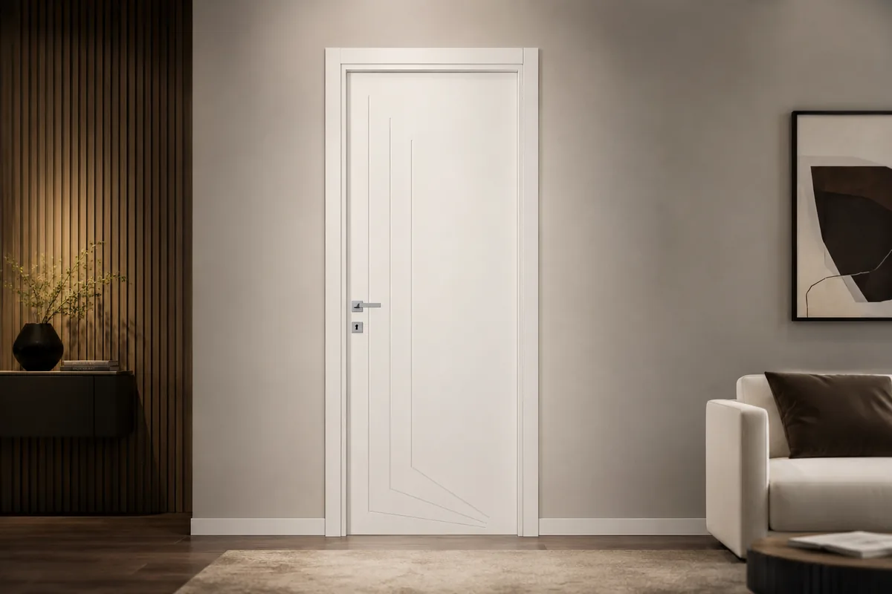
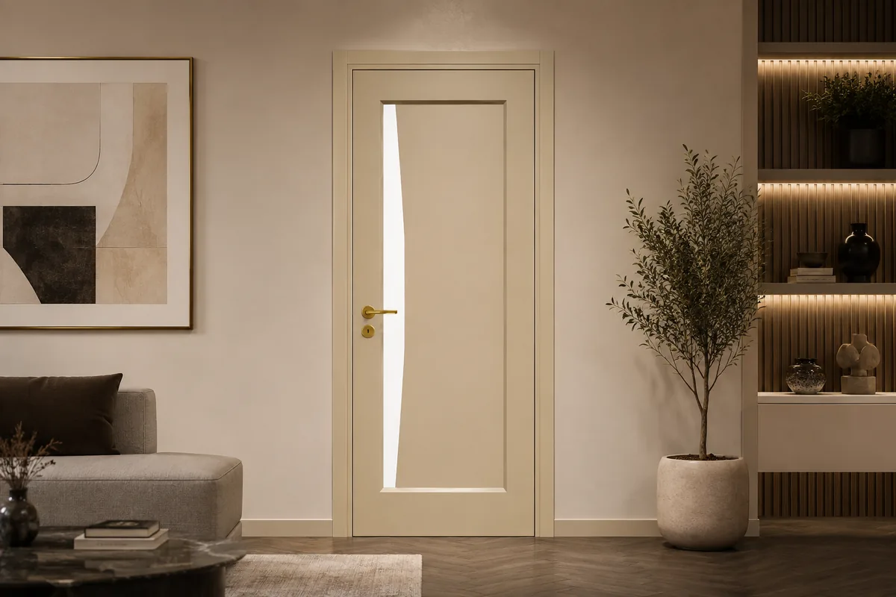
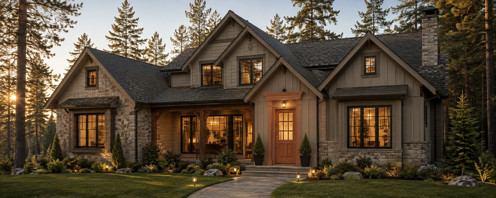

Configuratore
Pantografato
I modelli sono in lavorazione.
Porte in legno massello · su misura, dalla fabbrica
Listino · prezzi di fabbrica, IVA e trasporto esclusi


Configuratore porte
Quarantaquattro modelli a listino.
Apri il configuratoreLe collezioni
Il massello a listino e il pantografato hanno prezzi diversi.

Configuratore
Essenze, laccati, coprifili.

Configuratore
I modelli sono in lavorazione.
